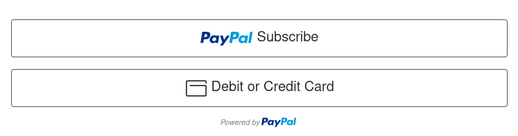

Comunitat EduTicTac
Una comunitat per compartir · Un espai per desenvolupar · Un lloc per aprendre
Cercador Lliure SearXNG
Si t'agrada el que fem pots col·laborar amb una subscripció anual de 10€


Una comunitat per compartir · Un espai per desenvolupar · Un lloc per aprendre
Cercador Lliure SearXNG
Si t'agrada el que fem pots col·laborar amb una subscripció anual de 10€
